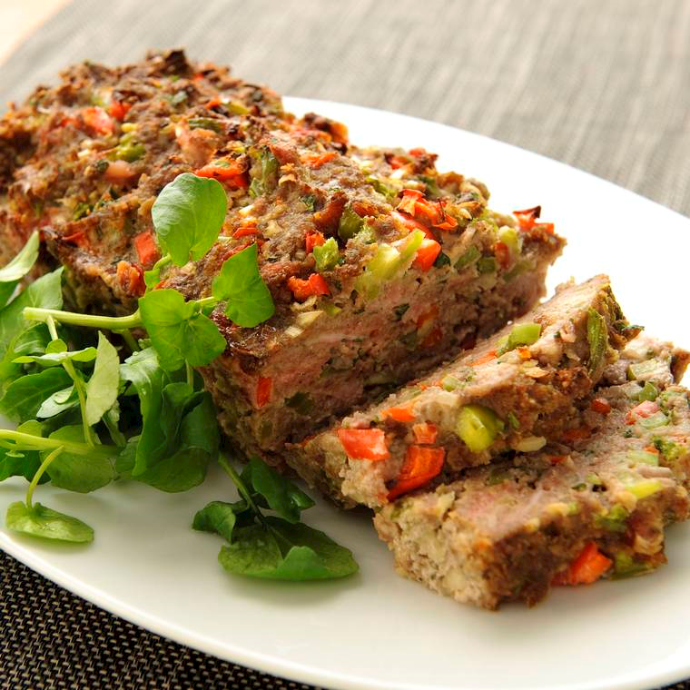

Gehaktbrood
Dit gehaktbrood kan prima bij een avondmaaltijd, maar is ook een makkelijk gerecht voor
een buffet.
Ingredienten
- 1 rode Paprika
- 1 groene Paprika
- 1 ui
- 2 tenen knoflook
- 50 gram bacon
- 1/2 bosje peterselie
- 400 gram mager rundergehakt
- 50 gram peneemeel
- 1 ei
- 1 blikje tomatepuree
- 1 theelepel tabasco
- peper
Bereidingwijze
- Warm de oven voor op 175 graden Celsius.
- Maak de Paprika's schoon en strijd ze in kleine stukjes. Maak de ui schoon en snijd deze fijn. Maak de
Knoflook schoon. Snijd de bacon in dunne reepjes. Hak de peterselie fijn.
- Doe het gehakt, paprika, ui, bacon, peterselie, paneermeel, ei, tomatenpuree, tabasco en peper in een
kom. Pers de tenen knoflook erboven uit en kneed goed totdat alle ingredienten zijn gemengd.
- Druk het mengsel in een cakevorm en bak deze ongeveer 1 uur in de oven.
- Haal de vorm uit de oven. Laat even afkoelen en haal het daarna uit de vorm. Serveer het gehaktbrood
op een schotel.

Tip met meergranenstokbrood. voor een minder zout gehaktbrood kun je bacon weglaten.